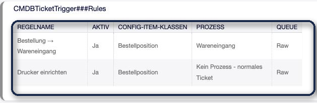
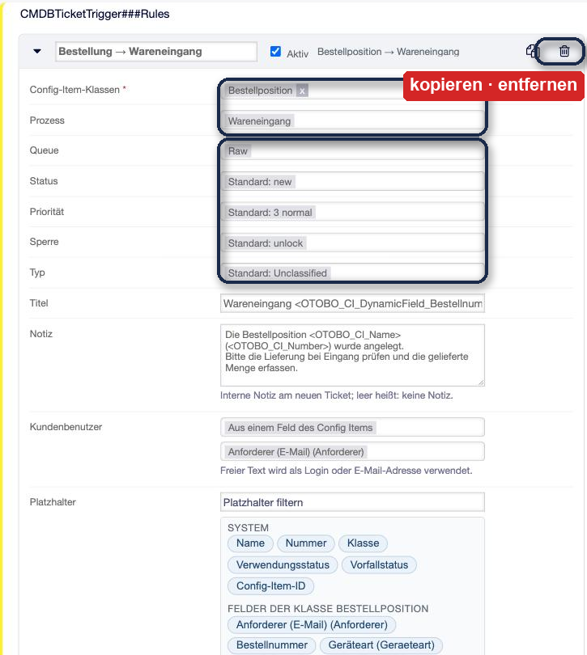
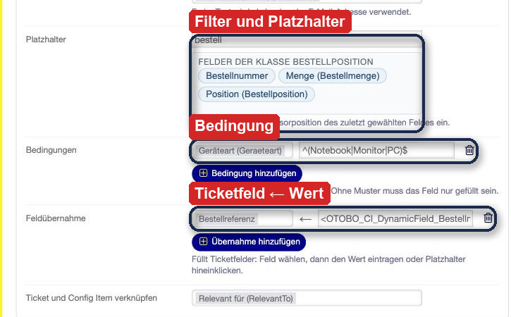
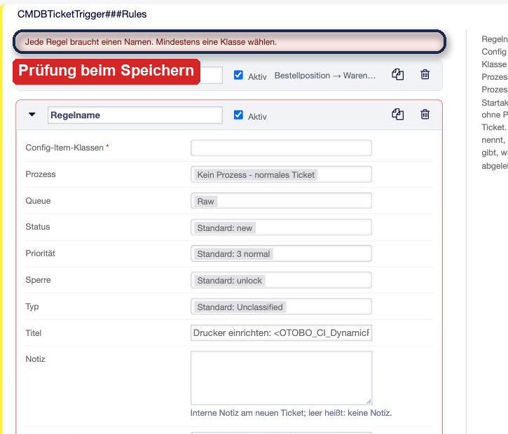
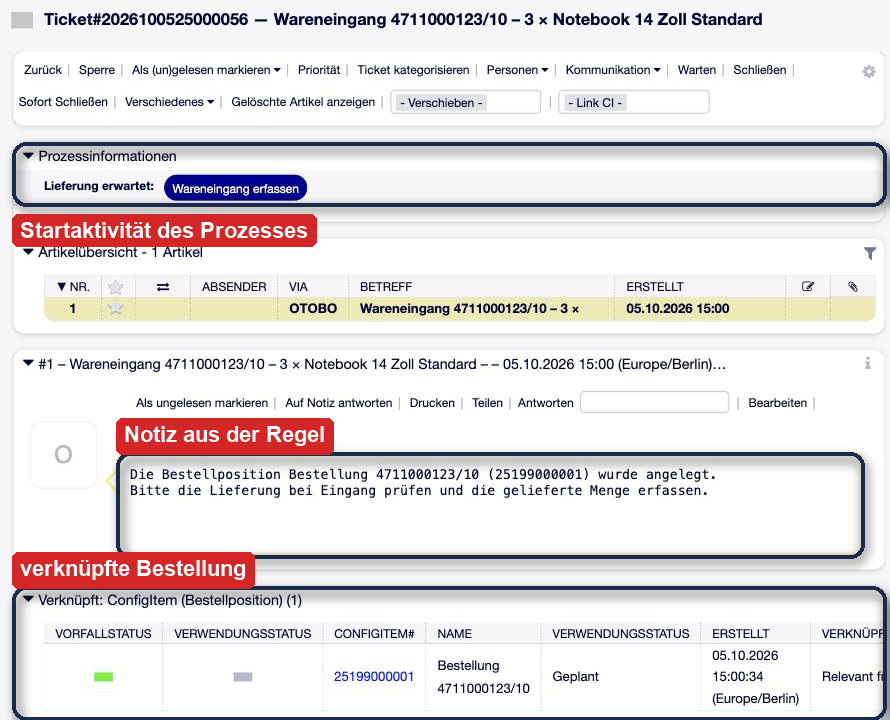
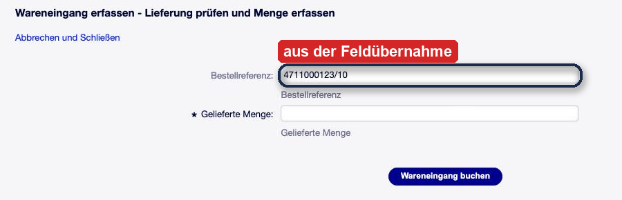
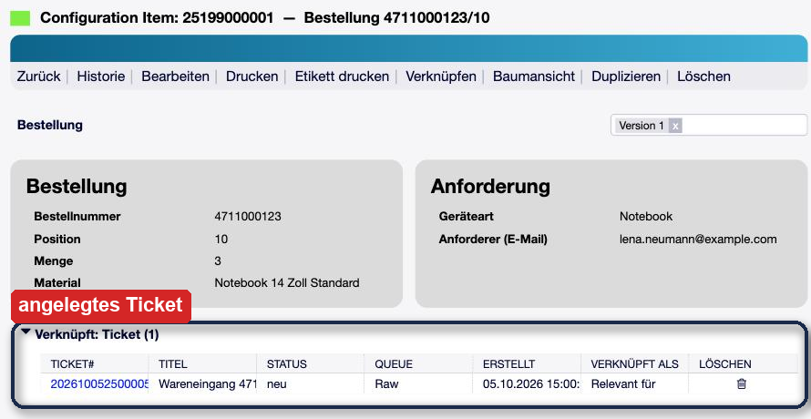

OTOBO CMDB Ticket Trigger¶
Beschreibung¶
CMDB Ticket Trigger legt automatisch ein Ticket an, sobald in der CMDB ein Config Item einer bestimmten Klasse entsteht — auf Wunsch gleich als Prozessticket, das in der ersten Aktivität eines Prozesses auf seine Bearbeitung wartet.
Ein typischer Fall: Ein Import schreibt jede neue Bestellposition als Config Item der Klasse Bestellposition in die CMDB. Mit einer einzigen Regel öffnet jede dieser Bestellungen sofort ein Prozessticket Wareneingang — mit der Bestellnummer im Titel, verknüpft mit der Bestellung, in der Queue der Kolleginnen und Kollegen, die die Lieferung auspacken. Trifft die Ware ein, öffnen sie genau dieses Ticket, erfassen die gelieferte Menge, und der Prozess übernimmt den Rest. Ohne Prozess legt dieselbe Regel ein ganz normales Ticket an, etwa „Neuer Drucker — bitte einrichten“.
Welche Klasse welches Ticket auslöst, steht in einer Liste von Regeln in der Systemkonfiguration. Jede Regel ist ein Formular: Was im System etwas benennt — Klasse, Prozess, Queue, Status —, wird ausgewählt statt getippt; Platzhalter werden angeklickt; und eine Regel, die so nicht funktionieren kann, wird schon beim Speichern abgelehnt.
Auf einen Blick
Ticket oder Prozessticket für jedes neu angelegte Config Item einer gewählten Klasse
Regeln als Formular in der Systemkonfiguration — keine Programmierung, keine Admin-Maske mit eigener Datenbank
Titel, Notiz und Ticketfelder aus den Werten des Config Items, über klickbare Platzhalter
Bedingungen auf Felder des Config Items, Kunde fest oder aus einem Feld
Gilt für jeden Weg in die CMDB: Agentenmaske, Import, Konsole, Webservice
Prüfung beim Speichern; eine fehlerhafte Regel blockiert nie das Anlegen des Config Items
Kein Core-Override, keine Änderung an bestehenden Masken
Einsatzszenarien¶
Bestellung und Wareneingang. Bestellungen kommen aus dem Einkaufssystem in die CMDB. Jede neue Bestellposition öffnet ein Wareneingang-Ticket, bevor die Lieferung da ist. Die IT sieht in ihrer Queue, was kommt; beim Eintreffen der Ware wird das passende Ticket über die Bestellnummer auf dem Lieferschein gefunden.
Verträge. Ein neuer Vertrag in der CMDB startet einen Prüfprozess: Laufzeit kontrollieren, Kündigungsfrist eintragen, Verantwortliche benennen. Nichts bleibt liegen, weil niemand an die Prüfung gedacht hat.
Neue Geräte. Ein neu inventarisierter Server oder Client erzeugt ein Abnahme- oder Inventarisierungsticket — etwa um Backup, Monitoring und Etikett nachzuziehen.
Unterschiedliche Wege je Gerätetyp. Mehrere Regeln für dieselbe Klasse sind erlaubt. Notebooks und Monitore laufen in den Wareneingang-Prozess, Drucker bekommen ein einfaches Einrichtungsticket — unterschieden über eine Bedingung auf das Feld Geräteart.
Systemvoraussetzungen¶
Framework¶
OTOBO 11.0.x
Pakete¶
ITSMConfigurationManagement ab Version 11.0.0
Für Prozesstickets¶
Ein aktiver Prozess mit Startaktivität. Für normale Tickets wird kein Prozess gebraucht.
Software von Drittanbietern¶
Keine.
Überblick¶
Installation — Paket einspielen
Konfiguration — wo die Regeln stehen
Admin-Handbuch — Regeln anlegen: Klasse, Prozess, Platzhalter, Kunde, Bedingungen, Feldübernahme
Anwender-Handbuch — was der Agent im Ticket vorfindet
Worauf achten — Zeitpunkt, Startdialog, mehrere Regeln
Referenz — Platzhalter, Meldungen im Protokoll
Installation¶
Das Paket wird wie jedes OTOBO-Paket über Admin → Paketverwaltung installiert. Es legt keine Tabellen an und ändert keine bestehenden Masken.
Nach der Installation gibt es keine aktive Regel; das Addon tut also nichts, bis die erste Regel gespeichert und in Betrieb genommen ist.
Konfiguration¶
Die Regeln stehen in der Systemkonfiguration unter Core → CMDBTicketTrigger in der
Einstellung CMDBTicketTrigger###Rules. Wie sie angelegt werden, beschreibt das
Admin-Handbuch.
Daneben registriert das Paket zwei weitere Einstellungen, die nicht angefasst werden müssen:
ITSMConfigItem::EventModulePost###9800-CMDBTicketTriggerHängt die Regeln an das Ereignis „Config Item angelegt“. Das Modul läuft am Ende der Anfrage, die das Config Item angelegt hat (siehe Worauf achten).
Loader::Module::AdminSystemConfiguration…###900-CMDBTicketTriggerLädt das Regel-Formular in die Systemkonfiguration.
Für Queue, Status, Priorität und Sperre gelten die Standardwerte der Prozessverwaltung, wenn
eine Regel keinen eigenen Wert setzt: Process::DefaultQueue, Process::DefaultState,
Process::DefaultPriority und Process::DefaultLock. Für den Typ gilt
Ticket::Type::Default. Diese Standardwerte gelten für Prozesstickets und für normale
Tickets gleichermaßen.
Admin-Handbuch¶
Wie das Addon arbeitet¶
Bei jedem neuen Config Item — gleich, ob es in der Agentenmaske, durch einen Import, auf der Konsole oder über einen Webservice entsteht — prüft das Addon am Ende der Anfrage jede aktive Regel:
Passt die Klasse des Config Items zur Regel? Wenn nicht, ist die nächste Regel dran.
Treffen alle Bedingungen der Regel zu? Wenn nicht, ist die nächste Regel dran.
Das Ticket wird angelegt — mit Titel, Queue, Status, Priorität, Sperre, Typ und Kunde.
Die Feldübernahme füllt Ticketfelder mit Werten aus dem Config Item.
Hat die Regel einen Prozess, wird das Ticket zum Prozessticket in dessen Startaktivität.
Die Notiz wird als interner Artikel angelegt.
Ticket und Config Item werden verknüpft.
Nur das Anlegen löst ein Ticket aus. Eine Änderung am Config Item, eine neue Version oder ein neuer Verwendungsstatus tun das nie. Ein Import, der vorhandene Config Items aktualisiert, erzeugt deshalb keine doppelten Tickets.
Passen mehrere Regeln auf dasselbe Config Item, legt jede ihr eigenes Ticket an.
Die Regel-Liste¶
Die Regeln stehen in der Systemkonfiguration unter Core → CMDBTicketTrigger. Im Lesemodus zeigt die Einstellung eine Übersicht: Regelname, ob die Regel aktiv ist, für welche Klassen sie gilt, welcher Prozess gestartet wird und in welche Queue das Ticket geht.

Abb. 1 Die Regel-Liste im Lesemodus: eine Regel startet den Prozess Wareneingang, die zweite legt für Drucker ein normales Ticket an.¶
Mit Einstellung bearbeiten öffnet sich das Regel-Formular. Regel hinzufügen legt eine neue Regel an; jede Regel lässt sich einklappen (Pfeil links), kopieren und entfernen (Symbole rechts). Eingeklappt zeigt die Kopfzeile, welche Klasse welchen Prozess auslöst.
Klasse, Prozess und Ticketwerte¶

Abb. 2 Eine Regel im Formular. Oben Klasse und Prozess, darunter die Ticketwerte – wo nichts gewählt ist, gilt der angezeigte Standardwert. Rechts in der Kopfzeile: Regel kopieren und entfernen.¶
- Regelname
Ein freier, eindeutiger Name. Er erscheint im Protokoll, wenn die Regel etwas meldet.
- Aktiv
Eine inaktive Regel bleibt gespeichert, wird aber nicht angewendet.
- Config-Item-Klassen
Eine oder mehrere Klassen. Die Regel gilt für jedes neue Config Item dieser Klassen.
- Prozess
Ein aktiver Prozess, oder Kein Prozess – normales Ticket. Mit Prozess beginnt das Ticket in der Startaktivität dieses Prozesses. Was der Startdialog abfragt, füllt später der Agent aus, der das Ticket bearbeitet.
- Queue, Status, Priorität, Sperre, Typ
Bleibt ein Feld auf Standard, gilt der Standardwert aus der Konfiguration. Das Formular zeigt ihn gleich mit an, etwa Standard: Raw.
Titel, Notiz und Platzhalter¶
Titel und Notiz sind Vorlagen. Platzhalter der Form <OTOBO_CI_…> werden beim
Anlegen durch die Werte des Config Items ersetzt. Die Notiz wird als interner Artikel am
neuen Ticket angelegt; bleibt sie leer, entsteht kein Artikel.
Unter den Textfeldern listet das Formular die Platzhalter der gewählten Klassen: oben die Angaben, die jedes Config Item hat (System), darunter die Felder der jeweiligen Klasse. Ein Klick setzt den Platzhalter an die Cursorposition des zuletzt gewählten Textfeldes — Titel, Notiz oder Wert einer Feldübernahme. Das Filterfeld darüber grenzt die Liste ein; „bestell“ findet zum Beispiel Bestellnummer, Bestellposition und Bestellmenge.

Abb. 3 Der Filter „bestell“ zeigt nur noch die passenden Felder der Klasse. Darunter eine Bedingung auf die Geräteart und eine Feldübernahme: das Ticketfeld Bestellreferenz bekommt Bestellnummer und Position.¶
Platzhalter |
Wert |
|---|---|
|
Name des Config Items |
|
Config-Item-Nummer |
|
Klasse |
|
aktueller Verwendungs- bzw. Vorfallsstatus |
|
Wert des Feldes Bestellnummer |
Felder mit mehreren Werten werden mit Komma verbunden; ein unbekannter Platzhalter wird leer. Der Titel wird nach 255 Zeichen abgeschnitten — so lang darf ein Tickettitel in OTOBO sein.
Kunde¶
Für den Kundenbenutzer gibt es drei Möglichkeiten:
- Kein Kunde
Das Ticket hat keinen Kunden.
- Fester Kundenbenutzer
Einen Teil von Name, Login oder E-Mail-Adresse eintippen und aus den Treffern der OTOBO-Kundensuche wählen — derselben Suche wie in den Ticketmasken. Ein Text, der nicht ausgewählt wird, wird so verwendet, wie er dasteht: als Login oder als E-Mail-Adresse.
- Aus einem Feld des Config Items
Ein Feld der gewählten Klassen, zum Beispiel die E-Mail-Adresse der anfordernden Person einer Bestellung.
Im Formular oben ist die zweite Möglichkeit gewählt: Der Kunde kommt aus dem Feld Anforderer (E-Mail) der Bestellposition.
Beim Anlegen des Tickets sucht das Addon den Wert zuerst als Login, dann als E-Mail-Adresse. Das Ticket bekommt diesen Kundenbenutzer und dessen Kundennummer. Wird niemand gefunden, entsteht das Ticket ohne Kunden, und das Protokoll vermerkt es. Anders als die Ticketmasken verlangt OTOBO beim automatischen Anlegen keinen Kunden.
Bedingungen¶
Ohne Bedingung entscheidet die Klasse allein. Mit Bedingungen muss das Config Item zusätzlich passen. Jede Zeile besteht aus einem Feld und einem optionalen Muster (regulärer Ausdruck):
mit Muster trifft die Bedingung zu, wenn der Wert passt. Hat ein Feld mehrere Werte, genügt einer.
ohne Muster trifft sie zu, wenn das Feld überhaupt gefüllt ist.
Alle Zeilen müssen zutreffen. Ein „oder“ innerhalb eines Feldes steht im Muster
(^(Notebook|Monitor|PC)$); ein „oder“ über verschiedene Felder hinweg sind zwei Regeln.
Muster |
bedeutet |
|---|---|
|
genau „Notebook“ |
|
einer dieser drei Werte |
|
beginnt mit 47 |
|
enthält „Notebook“ irgendwo |
Feldübernahme¶
Jede Zeile füllt beim Anlegen ein Ticketfeld. Links steht das Ticketfeld, rechts sein Wert — Text mit Platzhaltern, genau wie beim Titel. Damit ist der Startdialog eines Prozesses schon ausgefüllt, oder der Wert erscheint in Suche, Übersicht und Statistik des Tickets.
Ein Beispiel für Bedingung und Feldübernahme zeigt die Abbildung im Abschnitt Titel, Notiz und Platzhalter.
Ein Wert, der genau aus einem Platzhalter besteht, behält einzelne Werte: Ein Ticketfeld mit Mehrfachauswahl bekommt alle Werte, jedes andere Feld bekommt sie mit Komma verbunden.
Die Werte werden einmal beim Anlegen übernommen. Ändert sich das Config Item später, bleibt das Ticket, wie es ist.
Verknüpfung¶
Mit Ticket und Config Item verknüpfen wählen Sie, wie beide verbunden werden — etwa Relevant für. Mit Keine Verknüpfung entsteht das Ticket ohne Verbindung zum Config Item.
Speichern und Prüfung¶
Gespeichert wird mit dem Haken rechts oben; danach wird die Einstellung wie gewohnt in Betrieb genommen.
Beim Speichern prüft das Formular, ob jede Regel einen Namen hat, kein Name doppelt vorkommt und jede Regel mindestens eine Klasse nennt. Danach prüft OTOBO jede Regel gegen das System: Gibt es die Klassen, den Prozess, Queue, Status, Priorität, Sperre, Typ und Verknüpfungsart? Hat jede Bedingung ein Feld und ein gültiges Muster, jede Feldübernahme ein vorhandenes Ticketfeld und einen Wert? Ist etwas falsch, wird die ganze Einstellung nicht gespeichert, und die Meldung nennt jede Regel und jeden Grund.

Abb. 4 Eine Regel ohne Namen und ohne Klasse: Das Formular speichert nicht und nennt beide Gründe.¶
Tastatur: Im Regel-Formular speichert die Eingabetaste nicht und Escape bricht nicht ab — beide Tasten wählen dort Einträge in Auswahllisten. Gespeichert und abgebrochen wird über die Schaltflächen.
Anwender-Handbuch¶
Für Agenten gibt es nichts einzurichten. Sie finden die Tickets in der Queue der Regel, so wie jedes andere Ticket.
Ein Prozessticket aus einer Regel¶
Das Ticket trägt den Titel aus der Regel und steht in der Startaktivität des Prozesses. Im Beispiel wartet es in Lieferung erwartet; die Schaltfläche Wareneingang erfassen öffnet den Startdialog. Die Notiz der Regel ist der erste Artikel, die Bestellung hängt als verknüpftes Config Item am Ticket.

Abb. 5 Das Prozessticket aus der Regel: Titel aus der Bestellung, Startaktivität Lieferung erwartet, die Notiz der Regel als erster Artikel und die Bestellung als verknüpftes Config Item.¶
Im Startdialog ist die Bestellreferenz bereits aus der Feldübernahme ausgefüllt. Der Agent erfasst die gelieferte Menge; danach geht der Prozess weiter.

Abb. 6 Der Startdialog: Die Bestellreferenz ist aus der Feldübernahme bereits ausgefüllt, der Agent ergänzt nur die gelieferte Menge.¶
Die Bestellung kennt ihr Ticket¶
Weil Regel und Ticket verknüpft sind, steht das Ticket auch im Config Item: Wer die Bestellung öffnet, sieht sofort, welcher Wareneingang zu ihr gehört.

Abb. 7 Die Bestellposition mit ihrem automatisch angelegten Ticket.¶
Ein normales Ticket aus einer Regel¶
Eine Regel ohne Prozess legt ein gewöhnliches Ticket an — mit Titel, Queue, Kunde, Notiz und Verknüpfung, aber ohne Prozess-Widget.
Worauf achten¶
Zeitpunkt. Die Regeln laufen am Ende der Anfrage, die das Config Item angelegt hat. Ein Konsolen-Import mit 200 Positionen legt seine 200 Tickets deshalb am Ende des Laufs an, nicht einzeln währenddessen.
Der Startdialog wird nicht erzwungen. Felder, die der Startdialog als Pflicht kennzeichnet, prüft nur die Agentenmaske. Das Ticket entsteht ohne sie; der Agent füllt sie aus, wenn er das Ticket bearbeitet.
Keine Schleifen. Config Items, die ein Prozess selbst anlegt — etwa Geräte aus einem Wareneingang —, lösen nur dann ein Ticket aus, wenn eine Regel ihre Klasse nennt. Klassen, die Regeln auslösen, und Klassen, die Prozesse anlegen, sollten sich nicht überschneiden.
Wiedererkennen beim Import. Ein Import, der Config Items aktualisiert statt neu anlegt, erzeugt keine Tickets. Ändert sich aber die Art, wie ein Import vorhandene Einträge wiedererkennt, kann der erste Lauf danach alles neu anlegen — und dann auch zu jedem Eintrag ein Ticket. Eine solche Umstellung vor dem Aktivieren der Regel erledigen.
Eine Einstellung für alle Regeln. Alle Regeln stehen in einer Einstellung. Sie werden gemeinsam in Betrieb genommen und erscheinen gemeinsam in der Historie der Systemkonfiguration.
Referenz¶
Meldungen im Protokoll¶
Eine Regel, die zur Laufzeit nicht funktioniert, blockiert nie das Config Item: Es wird gespeichert, die Regel wird übersprungen und der Grund steht im OTOBO-Protokoll, mit Regelname und Config-Item-ID. Eine fehlgeschlagene Regel hinterlässt kein halbes Ticket.
no active process '…' - no ticket createdDer Prozess wurde nach dem Speichern der Regel deaktiviert oder gelöscht.
process name '…' is used by N active processesDie Regel nennt einen Prozess über einen Namen, den zwei Prozesse tragen.
process … has no start activityDer Prozess hat keine Startaktivität.
TicketCreate failed (queue …, state …)Queue, Status, Priorität, Sperre oder Typ gibt es nicht mehr.
field mapping target '…' is no ticket fieldDas Ticketfeld wurde nach dem Speichern der Regel gelöscht.
customer user '…' not foundDas Ticket wurde ohne Kunden angelegt (Hinweis, kein Fehler).
Grenzen dieser Fassung¶
Ausgelöst wird nur beim Anlegen eines Config Items, nicht bei Änderungen oder einem neuen Verwendungsstatus.
Feldwerte werden einmalig übernommen und später nicht nachgeführt.
Bedingungen werden mit „und“ verknüpft; ein „oder“ über mehrere Felder braucht zwei Regeln.